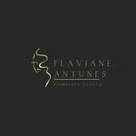
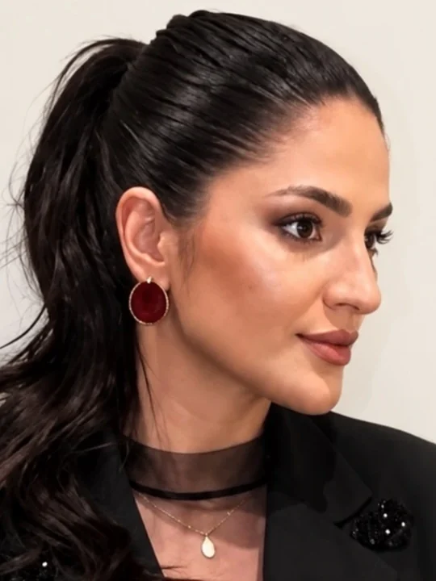
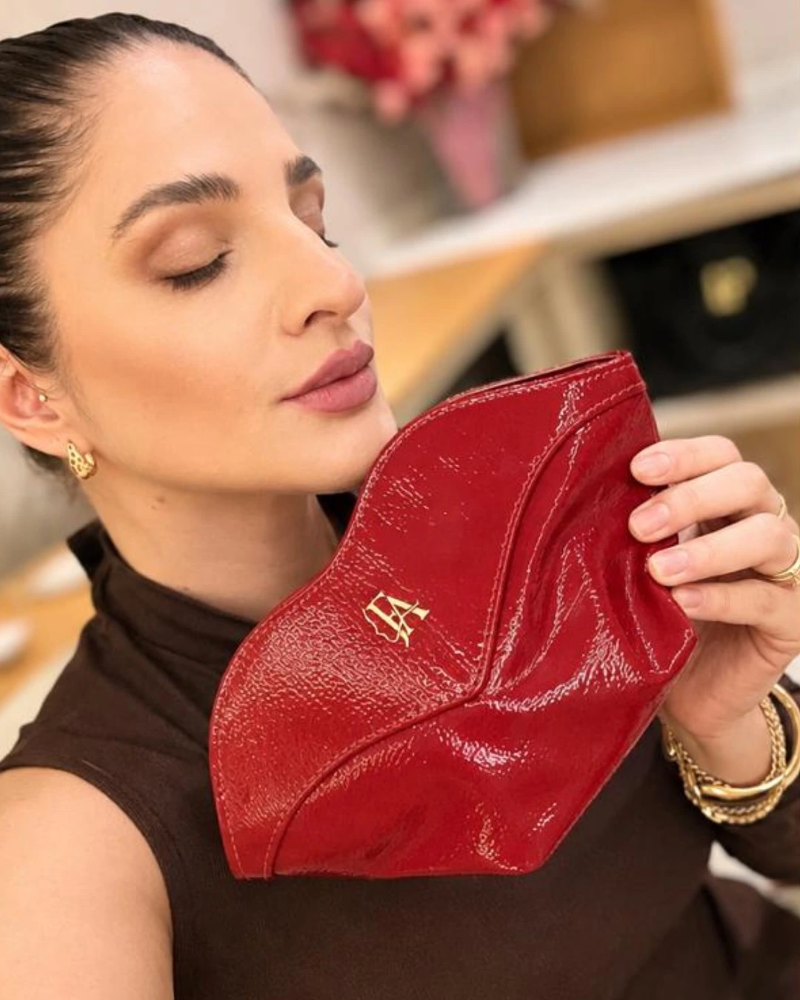

Preciso chegar sabendo o que quero fazer?
Não. Você pode contar o que te incomoda e o que quer manter. A Dra. avalia o conjunto e explica as possibilidades; a decisão é sua, com calma.

Flaviane Antunesharmonização facial · Tubarão Agendar avaliação
Dra. Flaviane Antunes · Harmonização facial · Tubarão/SC
Harmonização facial personalizada, com técnica, equilíbrio e naturalidade. Antes de pensar em qualquer área, a Dra. Flaviane olha o rosto inteiro.
O olhar dela
Em uma publicação, a Dra. fala sobre “o erro de tratar o rosto em pedaços”: uma área tratada sozinha pode destoar do resto. Esta página parte dessa ideia.
Perguntas rápidas
Naturalidade é um dos temas que a Dra. mais aborda. Mas ninguém deveria prometer isso antes de avaliar: depende do seu rosto, do plano e do que você deseja. É exatamente o que vocês conversam na avaliação.
Pelo que a Dra. publica, é olhar o rosto como um conjunto, e não uma área isolada. O que isso significa no seu caso, e se faz sentido para você, ela explica na avaliação.
O encaixe
A avaliação começa pelo rosto inteiro: proporções, expressão e o que você quer preservar, não só o ponto que incomoda.
Com o conjunto à vista, ela explica o que faz sentido para você, em que ordem, e também o que não é indicado.
Cada decisão leva em conta as outras partes do rosto, para que nenhuma área seja pensada sozinha.
Depois, a conversa continua. Cada pessoa responde de um jeito, e isso é tratado com honestidade.
Etapas descritas em termos gerais, a validar com a Dra. É uma metáfora de planejamento, não de resultado.
A avaliação
A harmonização da Dra. Flaviane é personalizada: nada sai de um pacote pronto. A primeira conversa serve para entender o que você busca e para olhar o conjunto antes de qualquer decisão.
Você conta o que incomoda e o que quer manter.
A Dra. observa o rosto como um todo, com calma.
Ela explica as possibilidades e o que não é indicado para você.
Você decide com tempo. Valores e agenda, direto pelo WhatsApp.
Descrição geral do atendimento, a validar com a Dra.

Equilíbrio é quando nenhum detalhe pede atenção sozinho.
Um ponto de cor pode ser lindo. O conjunto é o que faz ele parecer seu.
Dúvidas
Não. Você pode contar o que te incomoda e o que quer manter. A Dra. avalia o conjunto e explica as possibilidades; a decisão é sua, com calma.
Uma conversa com análise do rosto. Duração, valores e disponibilidade são informados pelo WhatsApp.
Em Tubarão/SC. O endereço que aparece no Google é Rua Florianópolis, 99, sala 01, Vila Moema, ainda a confirmar com a clínica.
Contato
Dra. Flaviane Antunesatendimento pelo WhatsApp